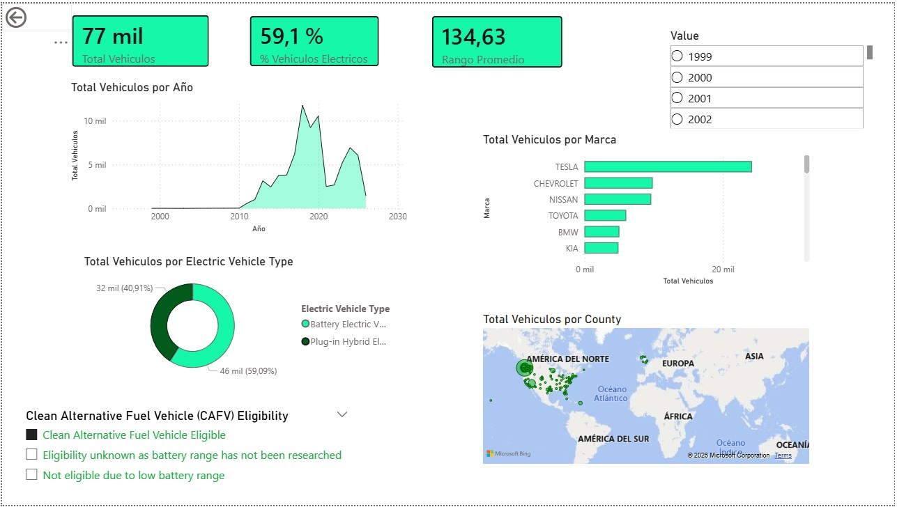

Dashboard Interactivo de la Población de Vehículos Eléctricos (EV)
Power BI | DAX | Power Query | Python (EDA inicial)

1. El Problema (Contexto)
El mercado de vehículos eléctricos está creciendo a un ritmo exponencial, pero los datos crudos (más de 280,000 registros) son difíciles de interpretar para la toma de decisiones estratégicas. El objetivo fue transformar este volumen de datos en un Dashboard Ejecutivo que permitiera identificar tendencias de adopción, marcas líderes y la eficiencia tecnológica de la flota.
2. Lo que hice (Proceso Técnico)
Análisis Exploratorio (EDA)
Identificación de valores nulos y limpieza de sesgos en la columna de "Electric Range" (autonomía).
Modelado de Datos Avanzado
Creación de una Dimensión de Tiempo (Calendario) personalizada en DAX para habilitar análisis cronológicos. Establecimiento de relaciones 1: (Uno a Varios)* para asegurar la integridad referencial y el rendimiento del reporte.
Ingeniería de Medidas (DAX)
Cálculo de Crecimiento Año tras Año (YoY %) usando inteligencia de tiempo (PREVIOUSYEAR, CALCULATE). Medición de Eficiencia de Autonomía mediante iteradores (AVERAGEX y FILTER) para excluir datos no investigados. Segmentación dinámica de Elegibilidad CAFV para análisis de incentivos fiscales.
3. Visualización y User Experience (UX)
Diseñé un dashboard interactivo compuesto por:
Panel de KPIs
Resumen instantáneo de flota total, % de adopción de vehículos 100% eléctricos (BEV) y rango promedio.
Análisis Geográfico
Mapa de burbujas para identificar la concentración de vehículos por condado y estado.
Filtros Inteligentes
Segmentadores por marca, año y estado de elegibilidad para incentivos.
4. Conclusiones y Hallazgos Clave (Insights)
-
Dominio de Mercado
Tesla lidera la transición con una cuota de mercado masiva, destacando el Model Y como el vehículo más popular del dataset.
-
Aceleración Tecnológica
A partir de 2020, la curva de adopción muestra un crecimiento superior al 30% anual, lo que indica una madurez en la confianza del consumidor.
-
Salto en Autonomía
El rango promedio de los vehículos ha mejorado sustancialmente, pasando de promedios de 100 km en modelos antiguos a más de 300 km en las versiones más recientes.
-
Concentración Urbana
La adopción no es uniforme; se concentra fuertemente en condados con mayor infraestructura de carga (como King County), lo que sugiere que la infraestructura es el principal motor de venta.
-
Mix Tecnológico
Existe una tendencia clara de migración de Vehículos Híbridos Enchufables (PHEV) hacia Vehículos de Batería Pura (BEV), impulsada por la mejora en las baterías.
Diccionario de Fórmulas DAX usado en el proyecto
1. Métrica Base (Conteo de Flota)
Esta medida sirve como la base para todos los cálculos de proporción y crecimiento.
Total Vehiculos = COUNTROWS('Electric_Vehicle_Population_Data')Valor Técnico: Establece el denominador dinámico para el análisis de participación de mercado.
2. Penetración de Tecnología
Utiliza lógica de filtrado de contexto para aislar segmentos específicos de la flota.
% BEV =
DIVIDE(
CALCULATE([Total Vehiculos], 'Electric_Vehicle_Population_Data'[Electric Vehicle Type] = "Battery Electric Vehicle (BEV)"),
[Total Vehiculos],
0
)Valor Técnico: Implementa CALCULATE y DIVIDE con manejo de errores para medir la transición hacia eléctricos puros.
3. Eficiencia Tecnológica
A diferencia de un promedio simple, esta medida usa iteradores y filtros para eliminar datos atípicos.
Rango Promedio (Autonomía) =
AVERAGEX(
FILTER('Electric_Vehicle_Population_Data', 'Electric_Vehicle_Population_Data'[Electric Range] > 0),
'Electric_Vehicle_Population_Data'[Electric Range]
)Valor Técnico: Uso de funciones iteradoras (AVERAGEX) y funciones de tabla (FILTER) para mejorar la calidad del dato.
4. Inteligencia de Tiempo
La fórmula más avanzada, requiere un modelo de datos relacionado con una tabla de dimensiones.
Crecimiento Año tras Año (YoY) =
VAR VehiculosAnioAnterior =
CALCULATE([Total Vehiculos], PREVIOUSYEAR('Calendario'[Date]))
RETURN
DIVIDE([Total Vehiculos] - VehiculosAnioAnterior, VehiculosAnioAnterior, 0)Valor Técnico: Implementación de Variables (VAR) y funciones de Inteligencia de Tiempo (PREVIOUSYEAR).
Habilidades Demostradas
Limpieza de Datos
Transformación de datos brutos en información útil.
DAX Avanzado
Creación de lógica de negocio compleja.
Data Storytelling
Diseño visual orientado a responder preguntas de negocio de forma rápida.